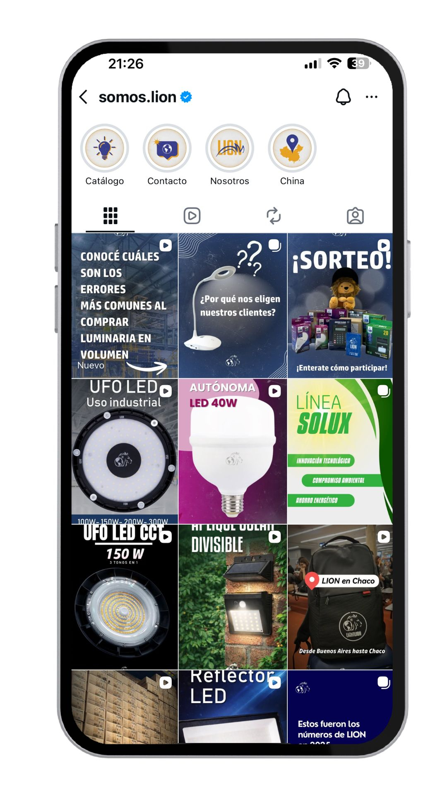
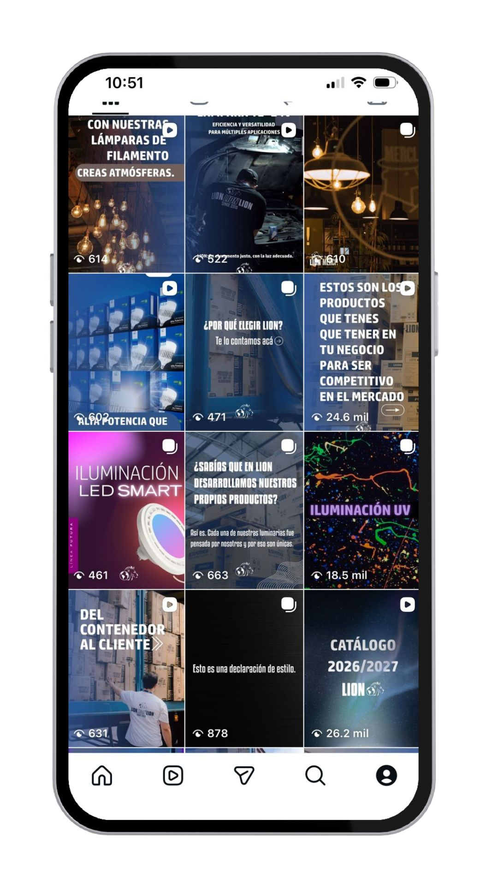
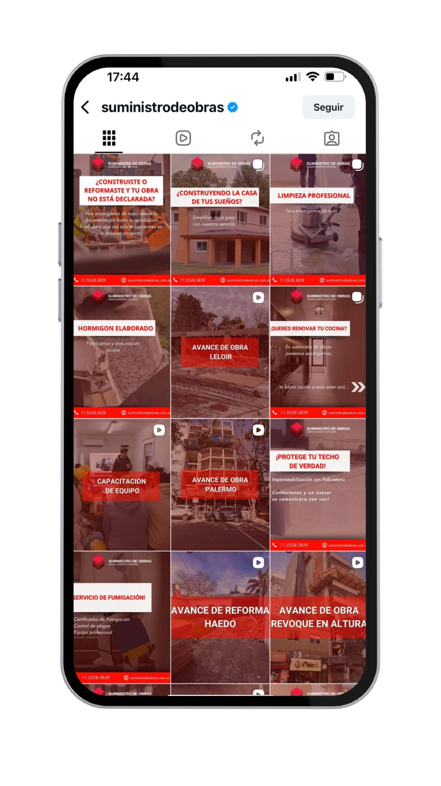
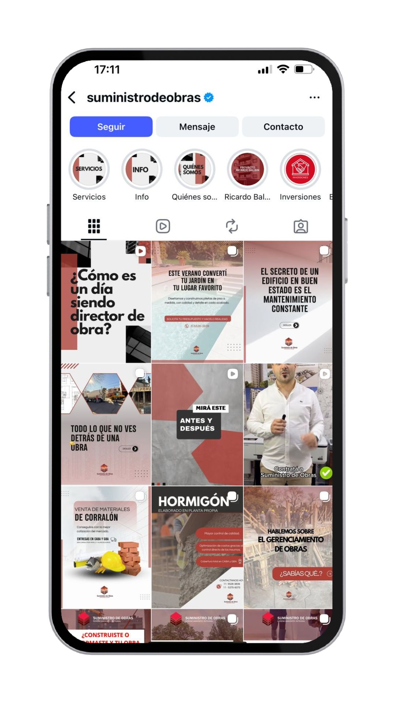
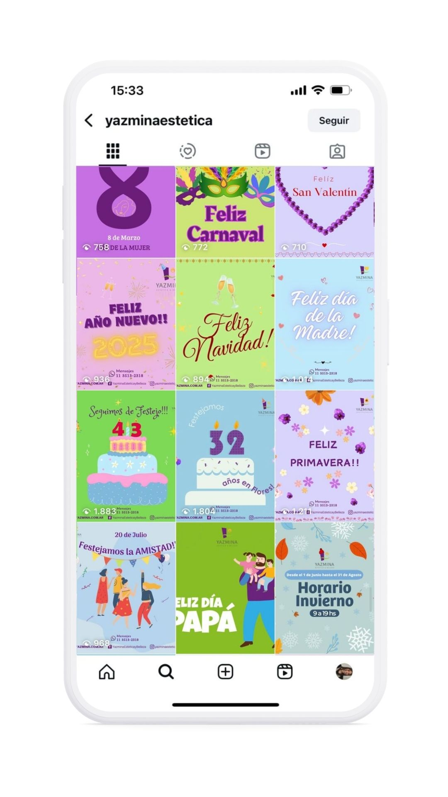
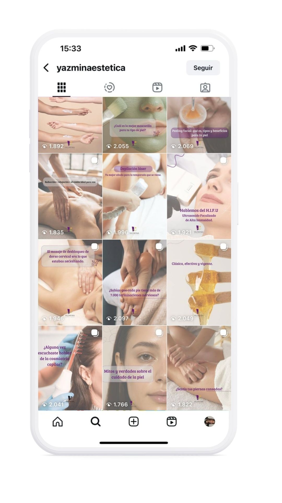
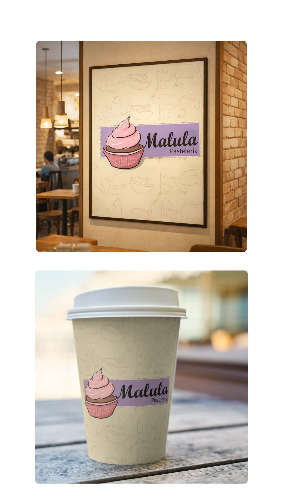
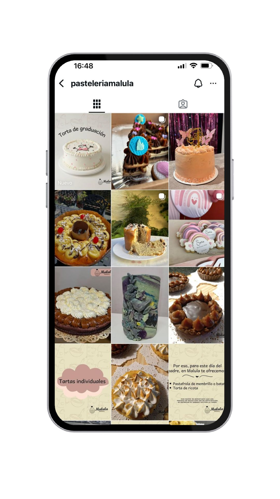

La vida en gerundio
Comunicadora Social & Social Media Manager. Especialista en creación de estrategia, rebranding, edición audiovisual y Paid Media.
ContactoEstrategia integral post-rebranding para posicionar la marca con un tono joven y disruptivo. Creación de guiones, edición de video para Reels/TikTok y presencia frente/detrás de cámara.

ANTES

AHORA
Unificación de la identidad visual con nueva paleta de colores, tipografías y orden de grilla. Generación de contenido educativo profesional para convertir seguidores en clientes.

ANTES

AHORA
Desarrollo de estrategia visual con paleta de tonos suaves. Contenido enfocado en destacar beneficios y promociones para aumentar interacciones y reservas directas.

ANTES

DESPUÉS
Estrategia visual transmitiendo calidez artesanal con ilustraciones a mano alzada y tipografías cursivas. Diseño e identidad visual de marca/logo propio adaptado a la apertura de local físico y gestión de contenidos.

DISEÑO DE LOGO & MOCKUP

FEED & GRILLA
Planificación de pauta digital orientada a objetivos comerciales: captación de clientes potenciales (Leads), alcance de marca y conversión directa.